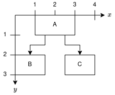
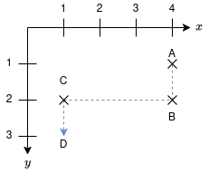
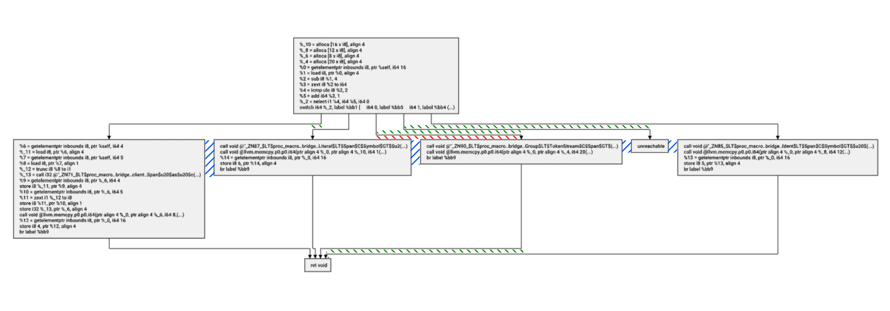

API
Architecture
Triskel uses a two step process for its API.
- First, a builder is used to construct the graph (creating nodes, edges, setting node dimensions etc...).
- Then, a layout for the provided graph can be constructed. The layout provides access to information such as a node's coordinates, or an edge's waypoints.
An optional third step is available: the renderer, it is used to go from coordinates to a visual representation (image or GUI component).
Coordinate system

Coordinates, when given as a pair correspond to (x, y). For example (4, 2) would be a point with x coordinate 4 and y coordinate 2.
Coordinates in Triskel use floats, and have no units.
Coordinates in Triskel correspond to the coordinates of the Top Left corner of an element. For example, in the diagram, the coordinates of A would be (1, 0) and those of B would be (0, 2).
Triskel will always return a graph where the minimum x and y values are 0. As you can see in the diagram, the top left corner of the bounding box of the graph is in (0, 0). This means that all coordinates provided by Triskel are positive.
Waypoints

Triskel models edges as a sequence of segments. This sequence of segments is represented as a list of waypoints.
In the diagram, the edge A -> D would be represented as the sequence of waypoints A, B, C, D (more precisely, using the coordinates (4, 1), (4, 2), (1, 2), (1, 3)).
Notes
- Notice that the order is important, the final coordinate is where the arrow is pointing to.
- The inner coordinates in the list are used to draw two segments (for example
Bis used forA-Band forB-C), they are not duplicated.
Components
Builder
The builder is used to construct a graph.
It can be built using the make_layout_builder method:
Creating nodes
Nodes can be added to the graph with the make_node method.
This method can be used to create a node with a given label or with given dimensions.
It returns the id of the created node.
This id is necessary to later access the coordinate of this node, or to create an edge with this node.
Root
The first node that is created must be the root of the graph.
Creating edges
Edges can be added to the graph with the make_edge method.
This method takes the id of the origin and destination nodes, and returns the id of the edge;
Creating the layout
A builder can be used to create a layout using the build method.
Lifetimes
Triskel assumes that the builder is destroyed after a call to build is performed.
Dot notation
Mainly for debug reasons, it is possible to export the graph contained in the builder to Graphviz's dot notation using the method graphviz.
The expected output for this graph would be:
Identifying the root
The root of the graph is square for easy identification.
Using a renderer
If your nodes have labels, we need to use a renderer to calculate the size of those nodes. This can be done after all the nodes are built using the measure_nodes method.
No renderer, no problem
If no renderer is provided, Triskel assumes that a character is 1 large and a line is 1 tall.
Settings
A couple settings can be changed in the builder:
x gutter: This corresponds to the minimum horizontal distance between two nodes, or a node and a vertical segment. It defaults to 50.y gutter: This corresponds to the minimum vertical distance between a horizontal segment and a node. It defaults to 40.edge height: This corresponds to the minimum vertical distance between two horizontal segments. It defaults to 30.

In the diagram, distances determined by:
x gutterare represented in blue.y gutterare represented in red.edge heightare represented in green.
Layout
The layout contains the coordinates necessary to draw the graph.
Node coordinates
Using a node's id, you can retrieve its coordinates.
Edge waypoints
Using a edge's id, you can retrieve its waypoints.
Node dimensions
We can access a node's dimension with the get_node_height and get_node_width methods.
This is especially important for nodes whose dimensions were calculated by a renderer.
Graph dimensions
We can access the graph's dimension with the get_height and get_width methods.
Renderers
Renders are used for drawing a layout. They are used with the render or render_and_save methods.
The ImGui provides the ImguiRenderer and Cairo extensions provides the PNGRenderer and SVGRenderer.
Other methods
Version
The function git_version allows you to identify which version of Triskel you are using.
Extensions
Cairo
The Cairo extension provides two renderers for saving layouts to images.
These renderers use the render_and_save method.
PNGRenderer
The PNG renderer is used to save layouts to PNG images. It is created with the make_png_renderer method.
SVGRenderer
The SVG renderer is used to save layouts to SVG images. It is created with the make_svg_renderer method.